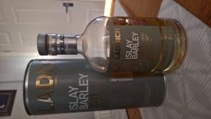
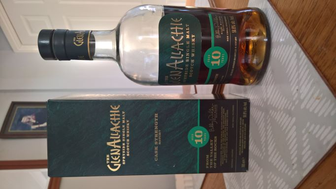
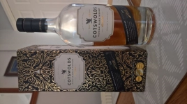
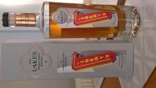
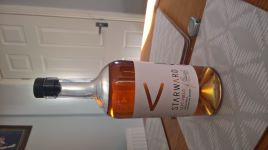

Country - Scotland - 2021
Region - Islay

Bruichladdich, Islay Barley, Alc=50%
Notes: The five year old first release of Bruichladdich's barley based single malt from the most significant distillery of the last twenty years. Lightly peated, well for the undisputed Kings of Peated malts, in this one its hardly noticeable. Claret Cask finished at a cask strength 50% rather than their normal 46%. It has a cleaner, fruitier taste than the rest of their range. A refreshing new direction from the Laddies. Well Done.
Country - Scotland - 2021
Region - Speyside

Speyside, The Glen Allaichie, 10yr, Alc=56.8%
Notes: Now this is how a Speyside malt should look, smell and taste like. Light and floral with a cooling tingle on the lips. Although distilled 10 years ago all the beauty was added over the last 6 months spent being polished in a port cask. A very brave decision by the new bottleling team to keep it cask strength has been rewarded. Single Malt Of The Year 2021 And International Whisky Of The Year 2021.
Country - Scotland - 2021
Region - Speyside

Cotswold Distillery, Shipton On Stour, Odyssey Barley 2016 5yr Alc=46%
Notes: Still only in their third full year of whisky sales and the Wizardly Worzels of the West Country have done it again. As with everything that they produce the class shines out. Another Multy award winning whisky.
Country - England - 2021
Region - The Lake District

Basenthwaite Distillery, The Lakes Liberty, Alc=56%
Notes: Third year of releases. Once again Phenominal. Cask Strength again, this time at 56%. Expensive? = Yes! Worth it? = Yes!
Country - Austrailia- 2021
Region - Western Austrailia

Starward Distillery, Perth, WA, Left Field, Alc=40%